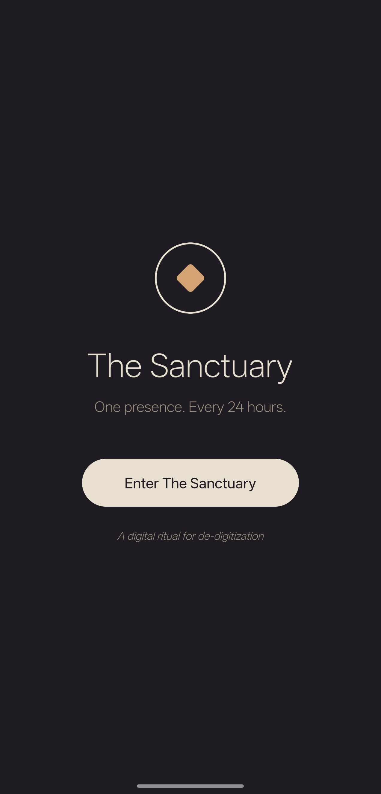
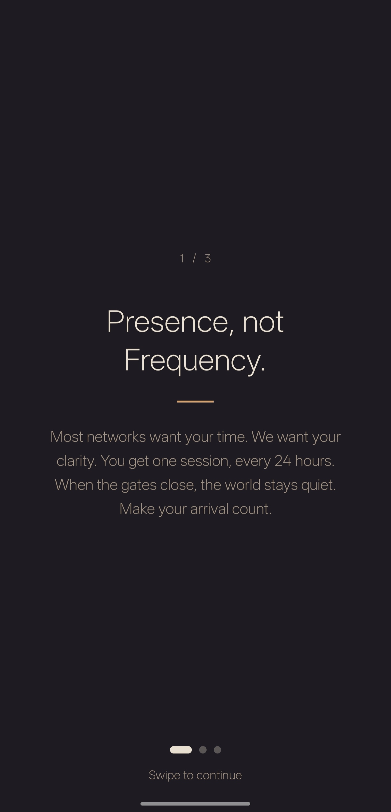
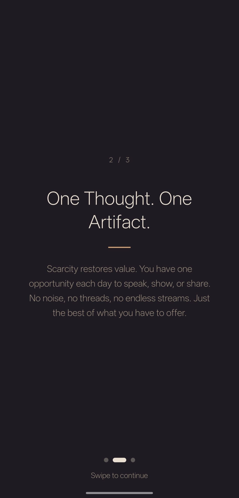
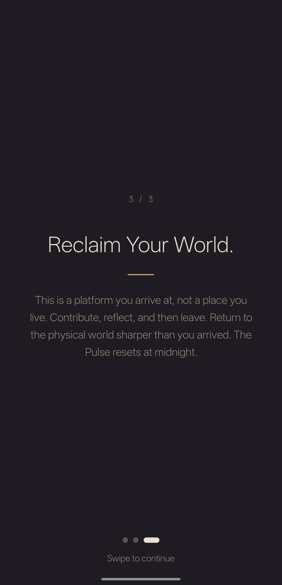
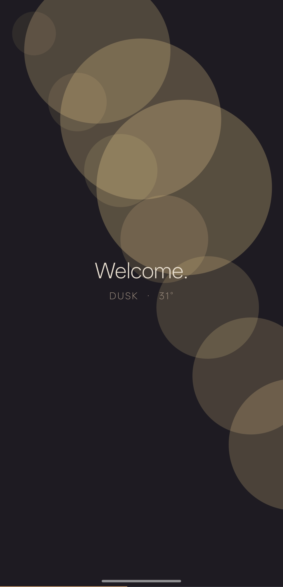
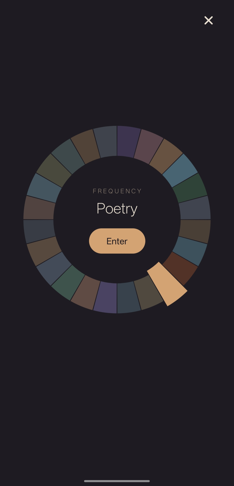
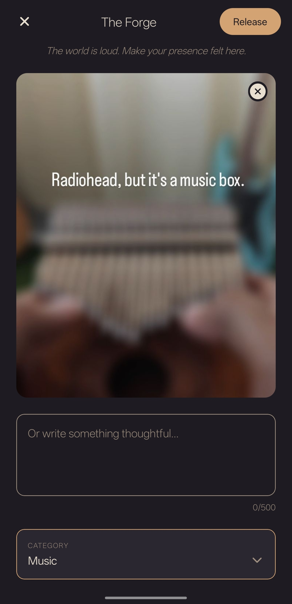
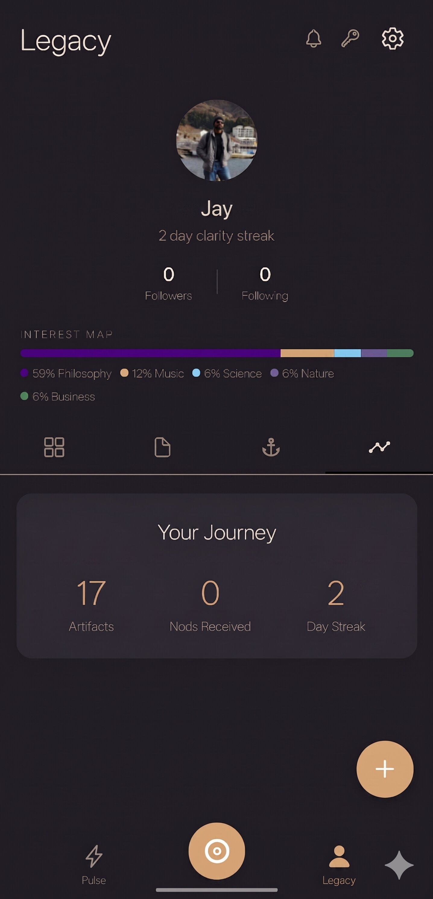

The Threshold.
A gateway designed for de-digitization. One entry every 24 hours.
Presence, not Frequency.
We don't want your time; we want your clarity. Make your arrival count.
Scarcity Restores Value.
One opportunity each day to speak or share. No noise, no threads.
Reclaim Your World.
Arrive, contribute, and then leave. Return to the physical world sharper.
The Environmental Anchor.
An interface that syncs with your local light and atmosphere.
The Frequency Wheel.
24 windows of human thought. Choose your lane and enter the silence.
The Forge.
Craft your single artifact for the day. Make it thoughtful; make it permanent.
The Intellectual Legacy.
A roadmap of your journey defined by resonance, not followers.







